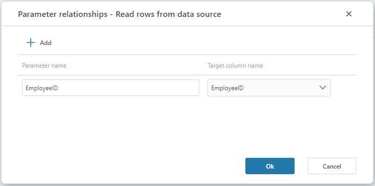

Parameter relationship
In a Data Context, the Parameter relationship defines how standalone arguments from the Data Context passed in during execution maps to columns in the Main table. By defining the Parameter relationship, you essentially define a WHERE clause on the Main table.

Parameters
| Name | Type | Description |
|---|---|---|
| Parameter name | Required | The name of the parameter that participates in the the Data Context definition and contains the data that determintes the slice of the main table. |
| Target column name | Required | The name of the column in the main table that we want to filter on. |
Example
This example shows the pseudo code for how data from the Main table is sliced when there is a Parameter relationship. The client passes in data context information for a Parameter name.
SELECT {m.columns} FROM MainTable m
WHERE (m.TargetColumnName = @parameter1Name_arg) OR (r.TargetColumnName = @parameter2Name_arg) ...